基于恒定乘积 AMM 的去中心化交易所与跨 DEX 原子套利
浙江大学《区块链与数字货币》第二次作业
| 基本信息 | 内容 |
|---|---|
| 学号 / 姓名 | 【填写学号】 / 【填写姓名】 |
| 项目名称 | MiniDEX |
| 开发环境 | Solidity、Hardhat、React、TypeScript、Ganache、MetaMask |
| GitHub 仓库 | 【填写公开仓库链接】 |
| 实验日期 | 2026 年 10 月 |
本报告以本地 Ganache 的历史链上操作、Hardhat 隔离测试记录和保存的截图为依据。两类证据分别注明，不把模拟结果当作真实本地链的交易记录。
这次作业要求实现一个采用 AMM 机制的 DEX。除了代币兑换，还需要让用户在网页上创建交易池、提供和撤出流动性，并用 ERC721 NFT 记录每个 LP 仓位。最后通过多用户模拟观察池的运行情况；Bonus 则是利用两个 DEX 之间的价格差进行原子套利。
我把项目分为三个部分：
MockToken.sol
负责测试代币及领取；MiniDEX.sol 负责池储备、Swap、LP 份额和
NFT；BonusAtomicArbitrage.sol 用于跨 DEX 套利。实际开发时，我把两个网络严格分开：Ganache
aware-coil（Chain ID
1337）保留网页操作的历史状态；Hardhat EDR（Chain ID
31337）只用于可重复的测试。这样做可以避免反复运行测试时覆盖已部署的
Pool 1、Pool 2 和 NFT 仓位。
课程两版 PPT 分别要求至少 10 位和至少 20 位模拟用户。这里采用更严格的 20 位标准。完成情况如下。
| 课程要求 | 实际完成的内容 |
|---|---|
| ERC20 代币及多人领取 | TKA、TKB、TKC；自动化测试包含 20 人、40 次领取 |
| 前端创建 AMM 池、Swap | 已创建 TKA/TKB、TKA/TKC 池；有网页交易记录 |
| 添加/撤出流动性、LP NFT | NFT #5、#6 的加池记录；#6 已执行赎回 |
| 展示 NFT 与各池 LP 来源 | 查看池、持有人、原始投入、份额和创建时间 |
| 手续费及 LP 收益 | 0.3% 费用模型；提供逐用户与反事实对照数据 |
| 多用户持续运行 | 20 用户，60.065 秒，674 笔成功交易 |
| Bonus 双 DEX 套利 | 用户交易形成价差；自动选路、同笔两次 Swap、失败回滚 |
MockToken 是用于实验的 ERC20 代币。领取函数通过
hasClaimed 限制每个地址只领取一次，数量为 1000 枚。Ganache
工作区实际使用 TKA、TKB、TKC 三种代币，其中 Pool 1 使用 TKA/TKB，Pool 2
使用 TKA/TKC。
网页能够读取 ERC20
地址并检查池是否已经存在。成功创建后，合约保存币对、储备和创建时间。重复币对以及不合法的代币地址会被拒绝。这里的关键不只是能调用
createPool()，而是要保证链上池信息能够在网页中被重新读取。
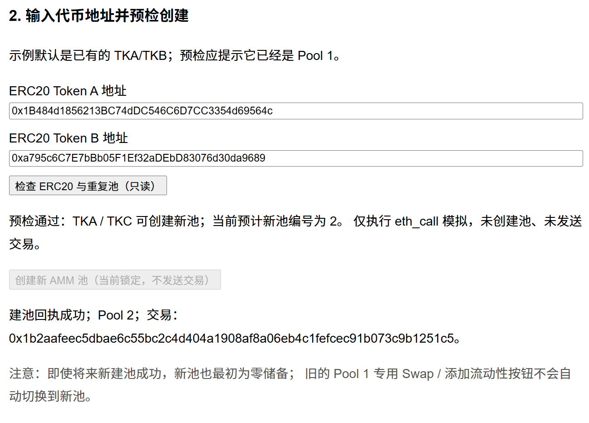
图 1 Pool 2 在 Ganache 1337 上通过网页创建的历史记录。
交易池按照恒定乘积模型定价。在不计手续费时，两种代币的储备满足：
其中， 和 分别是池内两种代币的储备， 是它们的乘积。实际 Swap 使用 0.3% 输入手续费，报价的整数计算可写为：
公式里的 997/1000
就是扣除手续费后的有效输入比例。输出使用整数向下取整，交易时还通过
minAmountOut 约束最小接收数量。0.3%
交易手续费和前端设置的 1%
滑点保护是不同的东西，前者影响报价，后者用于限制价格变化带来的不利成交。
Pool 1 完成过真实网页 Swap，交易后 TKA/TKB 储备发生变化。现在的美化版页面将实际 Swap 入口放在左侧，右侧独立提供跨池的双向只读报价；只读报价不调用钱包签名，也不会发送交易。
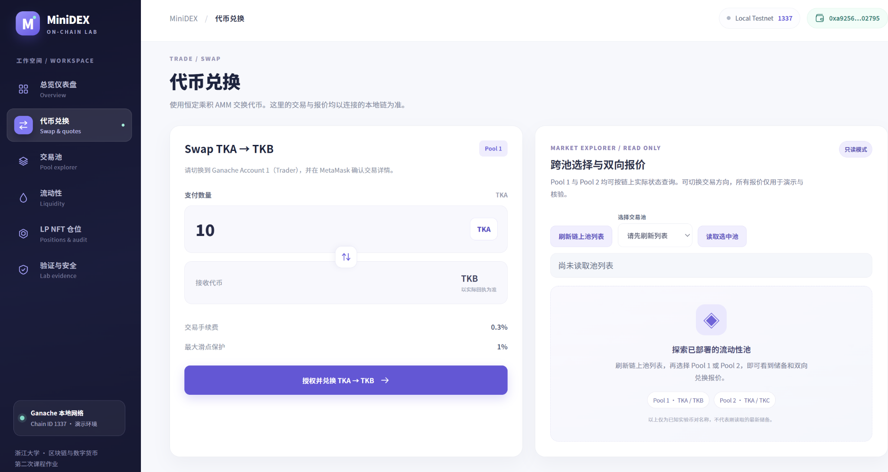
图 2 新版 Swap 页面。截图中右侧池列表尚未刷新，因此没有把空状态当作实时报价结果。
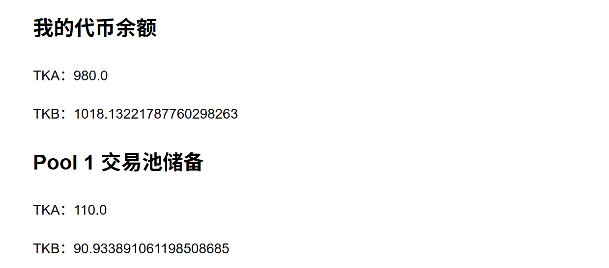
图 3 此前网页真实 Swap 后的记录，用于说明链上交易流程已经跑通。
第一次向空池添加流动性时，合约按两种投入量的几何平均数铸造份额：sqrt(amountA * amountB)。池已存在时，新增投入必须与现有储备保持比例一致，并按照当前总份额分配新的
LP 份额。
与直接记录“这个地址占有多少流动性”不同，MiniDEX 为每次成功加池生成独立的 ERC721 NFT。仓位中保存池 ID、原始投入、份额和创建时间，之后可按该 NFT 单独赎回。
Pool 2 初始流动性为 100 TKA + 100 TKC。为验证非首次加池，我又在同一池中追加 10 TKA + 10 TKC。加池前先读取储备、钱包余额和授权额度；当时两种代币的 allowance 都是 0，因此必须分开完成授权，再执行加池。
成功交易铸造了 NFT #6，份额为 10。池储备从 100/100 增加到 110/110，总份额从 100 增加到 110。这里没有把预估编号当作结果，而是以真实回执中的 NFT 编号为准。
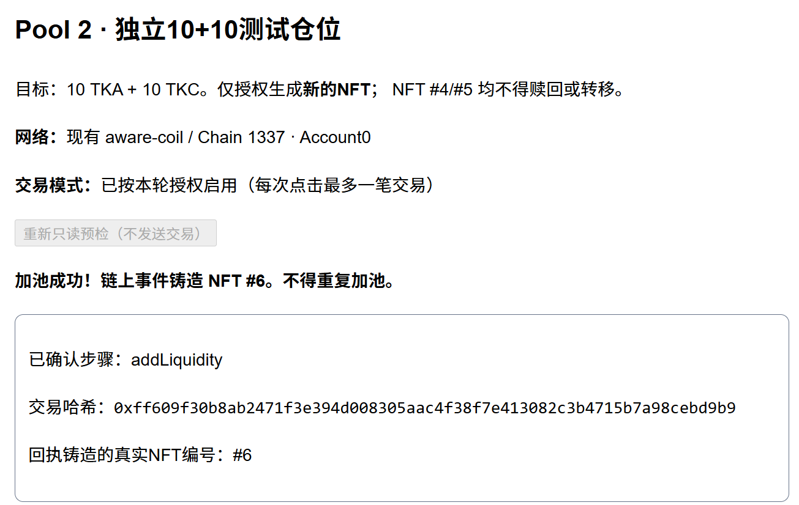
图 4 追加 10+10 后铸造 NFT #6
的回执；交易哈希：0xff609f30b8ab2471f3e394d008305aac4f38f7e413082c3b4715b7a98cebd9b9。
随后选择 NFT #6
进行撤池测试。赎回前通过只读检查确认持有人、仓位份额和预计返还数量，再执行一笔
removeLiquidity。实际收到 10 TKA + 10
TKC，NFT #6 的仓位被赎回，Pool 2 储备和总份额均恢复到 100。
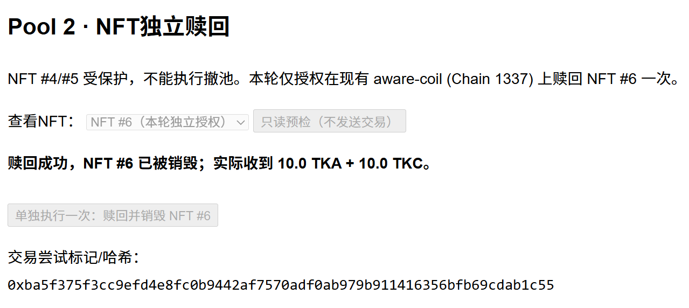
图 5 NFT #6
赎回成功的网页回执；交易哈希：0xba5f375f3cc9efd4e8fc0b9442af7570adf0ab979b911416356bfb69cdab1c55。
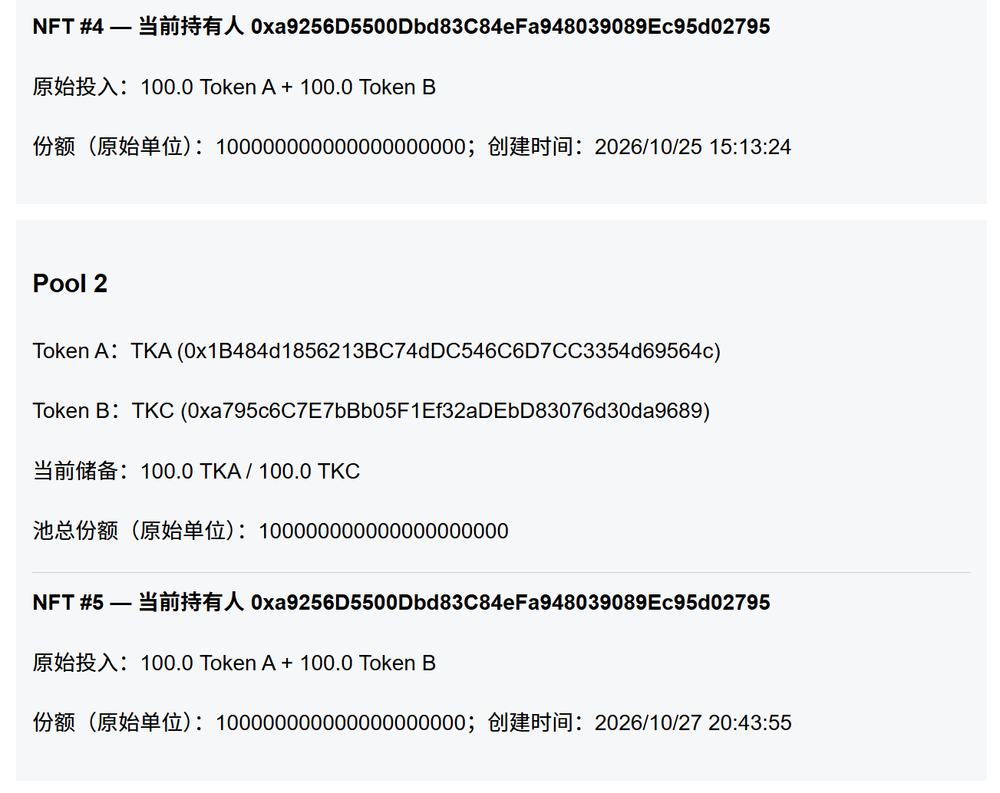
图 6 赎回后 Pool 2 恢复到 100/100，NFT #6 不再列为活跃 LP
来源。严格验证 NFT 销毁还可追加一次 ownerOf(6)
的只读不存在检查。
赎回并不是按原始投入数量固定返还。若用户持有份额 ，池当前总份额为 、两种储备分别为 和 ，那么理论返还数量是：
因此，在发生 Swap 后，即便 LP 份额没有改变，最终取回的两种代币数量也可能不同于投入时。NFT #4（Pool 1）和 NFT #5（Pool 2）保留为原有仓位，本次赎回只针对 NFT #6。
前端可以按池查看活跃 LP NFT，也能读取 NFT 持有人、原始投入和创建时间。新版页面把这些数据放在单独的“LP NFT 仓位”区域，并将历史赎回和安全核验与普通信息查询区分开。
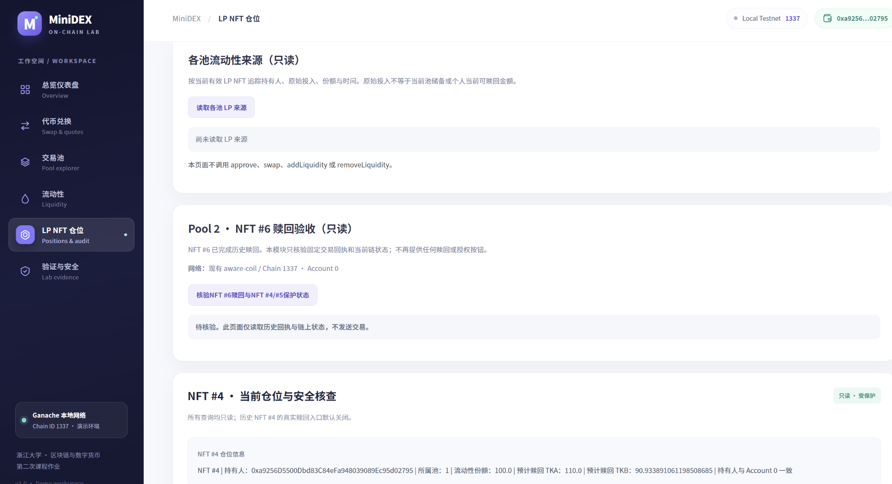
图 7 新版 LP NFT 页面。部分卡片需要点击只读查询后才显示最新状态。
我没有用 Ganache 的历史工作区跑批量测试，而是用 Hardhat EDR 31337 单独部署合约。测试包含 20 个不同地址。每个地址都完成领取、授权、加池、Swap 和撤池动作；Swap 阶段按固定顺序轮换用户、双向交易，持续时间设为 60 秒。
这更接近一项可重复的持续功能测试，而不是测量系统的最大 TPS。它的目的主要是检查交易长时间连续执行时，储备、NFT 份额和用户资产记录是否保持一致。
| 操作 | 交易数 |
|---|---|
| ERC20 领取 | 40 |
| ERC20 授权 | 40 |
| 添加流动性 | 20 |
| 双向 Swap | 554 |
| 撤出流动性 | 20 |
| 合计 | 674 |
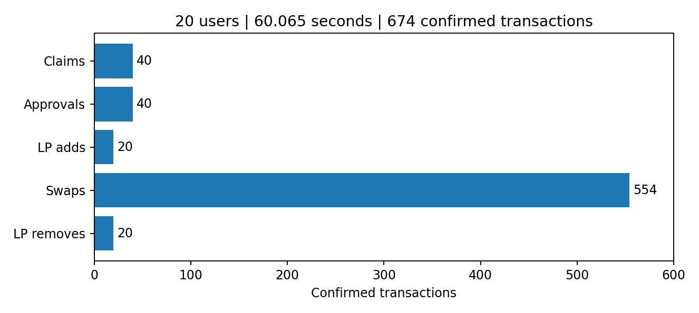
图 8 持续模拟中各类交易的数量；数据来自保存的 JSON 报告。
本次回归实测 60.065 秒，共确认 674 笔交易，其中 554 次 Swap，两种交易方向各 277 次；报告记录的失败交易为 0。每位用户的 LP 仓位也有单独的核算记录。
这里曾经容易混淆两个概念：交易收取了多少手续费，以及 LP 最后取回的资产比投入多了多少。
20 用户测试中，TKA 和 TKB 两个输入方向的交易量各为 27.7，按 0.3% 费率估算，各自手续费为 0.0831 枚对应代币。两种代币不能在没有价格换算的情况下直接相加成一种币的收益。
在撤池前，池的储备变化为：
| 口径 | TKA | TKB |
|---|---|---|
| 初始储备 | 200 | 200 |
| 554 次 Swap 后 | 200.071034144266621984 | 200.095125164232252915 |
| 相对初始值的数量变化 | +0.071034144266621984 | +0.095125164232252915 |
这两项数量变化不能直接称为 LP 净利润，因为交易也改变了池内的代币组成。
为了检查费用模型，我把 554 次 Swap 的方向和输入数量按原顺序重放，重新执行与合约一致的整数计算，得到的储备与报告逐 wei 一致。随后又把相同交易序列放进一个“不收手续费”的反事实池中比较：
| 模型 | TKA 终态储备 | TKB 终态储备 |
|---|---|---|
| 实际 0.3% 费率 | 200.071034144266621984 | 200.095125164232252915 |
| 不收手续费的对照 | 199.987903091146271666 | 200.012097640574005464 |
按照实际终态池边际价格把两种资产统一折成 TKA，含费池相对无费对照的模型价值差约为 0.16614858 TKA。这是“固定同一交易序列”的比较，不是 LP 在真实市场中额外领取的现金分红，也没有将价格波动及无常损失完全剥离。
原始记录保存在
evidence/reports/20-users-sustained-final.json 和
evidence/reports/lp-fee-counterfactual.json，便于复查计算过程。
基础测试曾直接给两个 DEX 不同的初始储备，用来检验套利合约能否盈利。为了更贴近 PPT 对 Bonus 的要求，我又增加了一个实验：两个独立 DEX 从相同价格开始，由模拟用户交易产生价差。
测试在 EDR 31337 上部署两个 MiniDEX 实例，初始 TKA/TKB 价格均为 B/A =
1。随后由 8 个不同模拟交易地址按固定种子
20261028 执行 20
笔交易。交易完成后，两个池的边际价格分别变为：
| 状态 | DEX 1（B/A） | DEX 2（B/A） |
|---|---|---|
| 初始价格 | 1.000000 | 1.000000 |
| 用户交易后 | 0.743491 | 1.368262 |
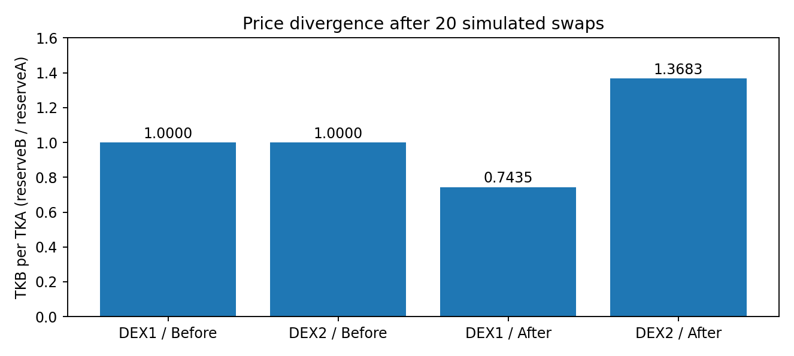
图 9 20 笔模拟交易使两个 DEX 的价格发生分化。这里是 8 个交易地址，不是 20 个独立用户。
检测逻辑不只比较标称价格，而是按当前储备计算两条路线的两次实际
Swap 报价，其中都包含 0.3% 的交易手续费。给定 5
TKA 本金，检测到更有利的路线为 DEX2_to_DEX1：
| 项目 | 实测结果 |
|---|---|
| 投入 | 5 TKA |
| 第一次 Swap 得到 | 6.445055888983176297 TKB |
| 第二次 Swap 换回 | 8.043361852507376573 TKA |
| 毛利润 | 3.043361852507376573 TKA |
| 同一回执中的 Swap 事件 | 2 次 |
| Gas 使用量 | 166,829 units |
测试回执中两次 Swap 事件来自同一笔交易。当把最低利润目标设为不可能达到的 100 TKA 时，整笔调用回滚，两个 DEX 的储备和套利合约余额均保持不变。这是原子性的主要验证。
此次套利使用预先准备的测试 Token 作为本金，并不是闪电贷。Gas 成本记录为 22070976213 wei（原生测试币），不能在缺少合理汇率时直接从以 TKA 计价的毛利润中扣除。
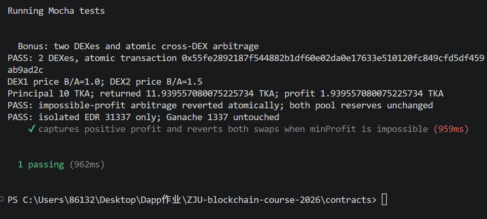
图 10 较早的基础测试采用预设价差；本节 5 TKA 的增强实验以
bonus-rubric-final.json 为准，二者不是同一次交易。
最初页面按功能逐段堆叠，操作入口分散，录屏时也很难在短时间内展示完整流程。后来把界面整理为六个区域：总览、代币兑换、交易池、流动性、LP NFT 仓位、验证与安全。这样既能保留真实业务入口，又能将只读查询和历史测试成果单独展示。
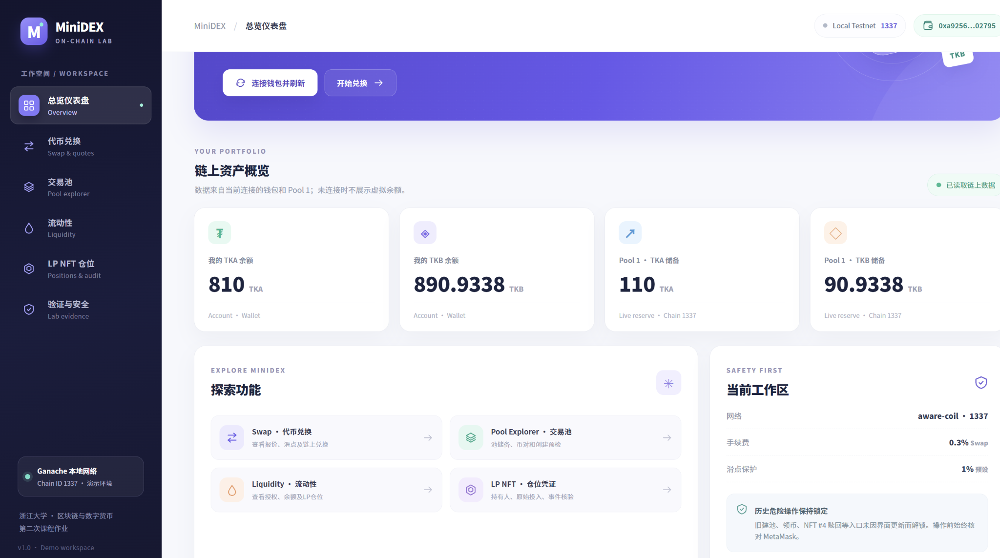
图 11 连接 Ganache 1337 钱包后的首页，可查看余额和 Pool 1 储备。
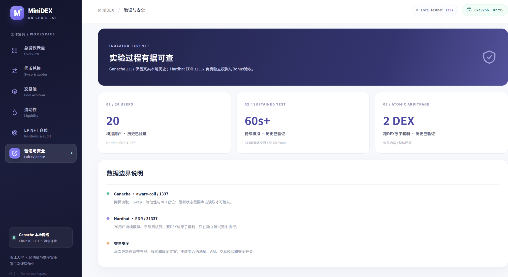
图 12 实验验证页区分 Ganache 1337 的历史交易和 Hardhat 31337 的模拟结果。
项目在 Windows 环境中运行，前端与合约分别安装依赖。隔离测试不需要连接 Ganache：
# 项目根目录下
Set-Location .\contracts
npm install
npx hardhat compile
npx hardhat test mocha test/bonus-atomic-arbitrage.test.mjs test/bonus-rubric-coverage.test.mjs --network hardhat
$env:SIMULATION_DURATION_MS = '60000'
$env:SIMULATION_INTERVAL_MS = '100'
npx hardhat test mocha test/simulation-20-users.test.mjs --network hardhat
Set-Location ..\frontend
npm install
npm test
npm run typecheck
npm run build
npm run dev测试报告里已经记录了 Bonus 两个用例通过、20
人持续模拟通过；此前前端有 5 个测试文件、12
项测试通过的记录。视觉界面最新 V2
安装后尚缺一张完整前端回归输出，因此提交前仍应在当前本地源码上再运行一次
npm test、npm run typecheck 和
npm run build。不要把旧版构建通过记录直接当作这次视觉改造的验证结果。
项目中有几处问题值得记录。
第一，授权额度与真实交易是两回事。 Pool 2 准备追加 10+10 时，账户余额充足，但两种 Token 的 allowance 都为 0。需要先分别授权，才能执行加池。后来将只读预检和正式写入分开，减少了重复发送交易的风险。
第二，合约编译与测试环境需要分别排查。 Bonus
合约一度遇到 Solidity
Stack too deep，调整编译设置中的优化器和 viaIR
后解决。20 用户模拟曾因 Hardhat 3 环境中的 ethers
引用方式不匹配而在运行开始前失败，修正引用后测试才真正通过。这些错误和
AMM 交易公式本身无关。
第三，NFT 的“原始投入”和“现在能取回多少”不能混用。 份额代表的是池资产的比例；发生交易之后，池储备变了，NFT 的赎回金额自然也可能变化。费用分析也是如此，单纯比较最终余额并不能把手续费贡献、市场价格变化和无常损失完全区分。
第四，测试结果要说明网络环境。 Ganache 的历史交易哈希和 NFT 编号来自现有本地链，Hardhat 的交易是可重复的隔离测试，两者不能互相替代。
从结果看，MiniDEX 已经覆盖了 ERC20 领取、网页建池、Swap、LP NFT 添加和赎回等主要功能；20 用户持续模拟和 Bonus 原子套利也有对应测试与数据文件。仍需注意，这是一套课程实验环境，未进行公开网络中的安全审计或实际经济风险评估，不能把本地测试的盈利数字理解成真实市场中可获得的利润。
docs/OFFICIAL_REQUIREMENTS.txt（两版 PPT
的作业页转录）。contracts/contracts/MiniDEX.sol、MockToken.sol、BonusAtomicArbitrage.sol。evidence/reports/20-users-sustained-final.json。evidence/reports/lp-fee-counterfactual.json。evidence/reports/bonus-rubric-final.json。docs/images/；统计图：docs/figures/。本报告中仍需要填写学号、姓名、GitHub 地址。演示视频和正式邮件提交是报告以外的后续事项，不能用截图代替。